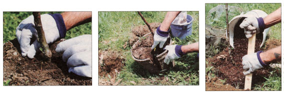
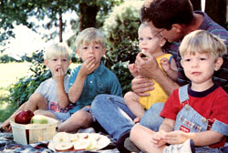

Virginia Beauty And Her Kin
By Tim Hensley
October/November 1996
There's nothing like the beauty of a southern belle. I ought to know, I married one, a Florida blond.
And when it comes to apples, there's nothing like the taste of a Virginia Beauty. Again, I ought to know. My wife and I run a mailorder nursery specializing in antique apple trees-old southern apples in particular-and Virginia Beauty is one of the best.
Sink your teeth into this black-skinned pome and you'll never be the same. Firm, yellow flesh, juicy and sweet. And the flavor keeps you guessing: Last December it was hints of cherry and almond. The year before, cinnamon and vanilla. Unique is probably the best way to describe it. And it's hard to eat just one. Try an Oregon Delicious after sampling a Virginia Beauty and you'll think you're eating sawdust.
And that's not all. Virginia Beauty has some attractive cousins as well. In fact, there's a whole world of southern apples just waiting to be enjoyed. Little-known varieties with unusual names like Rambo, York, Albemarle Pippin, Spitzenburg, Yates, Mountain Boomer, Mammoth Black Twig, Hog Sweet, Ralls Janet, Horse Apple, and Buckingham.
have been propagated for centuries because they are some of the best apples in the world... And I'm not just talking up southern apples out of a misguided affection for the Confederate flag. Southern apples have been propagated for centuries because they are some of the best apples in the world. Sentiment for them runs high: "I grew up with that apple on my granddaddy's farm and there ain't nothing like it," folks will say. Or, "They've just about bred the taste out of these modern apples, all big and purty."
So why doesn't everyone know about southern apples? There are two reasons. First, southern apples are uniquely suited to the long, hot summers of the South. According to Lippincott's Productive Orcharding, published in 1914, that means southern apples thrive where mean summer temperatures range from 60 to 67 degrees. According to a modern zone map, we're talking about zones 6, 7, and 8.
That's good news for folks who thought they couldn't grow apples because their climate is too warm. Bad news if you think a southern belle is going to be happy in the North. ...
of the original 1,400 varieties grown in southern orchards, 1,100 are now considered extinct.
Take the Ben Davis, for example. This apple was popular in the South after the Civil War, not so much for its taste but as a prolific and dependable bearer. When growers in the Northeast tried to duplicate its success, the results were disastrous. As Fred Lape, author of Apples and Man (Litton, 1979), relates, "[Ben Davis] did not ripen well in the North, and it had to compete with varieties like the Northern Spy and the Greening. Orchardists planted good stands of it and brought them to production, only to find that buyers bought the fruit one year and never again. There was nothing to do but tear the trees out and replace them with a variety whose flesh was not dry, coarse, and tasteless."
The other reason southern apples are not widely known (even in the South) is that many of them are not suited to the requirements of commercial orcharding. A good commercial variety must be heavy-bearing, early-bearing, disease-resistant, and vigorous. Its fruit should be large and of a striking color; it should store well and ship well.
Like coming down to the ten finalists in the Miss Georgia Pageant, run most any apple through a grid like this and it's bound to miss the cut. The Newtown Pippin, for example, is a squatty yellow apple of medium size with a susceptibility to scab when grown on clay soils-a real challenge for the commercial orchardist. Yet Thomas Jefferson, who grew this apple, wrote while visiting in Paris, "They have no apple to compare with our Newtown Pippin." Even today, when pitted in taste contests against the most flavorful types, Newtown Pippin comes out on top.
Likewise, the Spitzenburg is renowned for its rich, aromatic, and spicy flavor. One promological writer has described it as "the finest eating apple in the world when perfectly ripe." Hard to pass up, right?
But growing a Spitzenburg is a different story. The tree itself is of low vigor with a susceptibility to scab, canker, and fire blight. On top of that, it requires a pollinator, it tends to biennial bearing (bearing fruit every other year), and it ripens unevenly October through November, a real nightmare for the guy at the orchard in charge of picking. What I am saying is that many of the old varieties are not pretty enough or prolific enough or punctual enough to suit the needs of the commercial orchardist.
But for the home orchardist, these same varieties can make coming home from work seem like stepping into Eden. And those little quirks and faults can even work in your favor. If Spitzenburg takes six weeks to ripen its fruit, that's okay. You're not looking to pick 20 bushels of apples all at once anyway. If Newtown Pippin is not very pretty, that's okay too. Beauty is only skin deep; gustatory delights run clear to the core. And so what if your Benham apple doesn't keep very well. It'll be traveling from the tree to the kitchen table-if it gets that far!
WHY JUST THREE? There is a huge world beyond Red Delicious, Golden Delicious, and Granny Smith. Home orcharding is how it was done for years in the South; subsistence farming dictated it. Apples were a staple of the time. They were used for cooking, drying, and making cider and vinegar. They were eaten fresh and stored away. As a result, nurseries from that era carried a wide selection of varieties. The Joshua Lindley Nursery of North Carolina, for example, offered 169 different apple varieties in 1869. In 1900, the Franklin Davis Nursery of Richmond, Virginia, listed 269 varieties. A large operation, they shipped apples all over the South.
SHOP CLOSE to home and expect to pay from $7 to $20 for good, husky, one year whips. I happen to come from a family of nurserymen myself, and just last spring I was able to visit my great-great grandfather's home place at Silver Leaf Nursery in Lee County, Virginia. Things there are much as they were in the 1930s, so I was able to poke around through some of the old nursery books and papers. One little nugget I carried away from the visit was a page from one of the old order books the salesmen used to carry. Dated 1933, it lists 33 different apple varieties.
Sadly, of that number, only three or four are available at the typical garden center today. The deeper tragedy, however, is that while southerners developed about 1,400 unique apple varieties, nearly 1,100 are now considered extinct. With the coming of the railroads, the decline in subsistence farming in the 1930s, and the postwar exodus to suburbia, many of the old varieties fell into disuse and passed off the scene virtually unnoticed.
We should be thankful, though, that nearly 300 of the very best southern apples are still available. Hobbyists and independent nurserymen, searching old homesteads, pruners at the ready, have preserved an irreplaceable part of the South's agricultural heritage. Even more encouraging, there has been a resurgence of interest in antique apples over the last 10 years, and many varieties that were thought to be extinct are being rediscovered in abandoned orchards all over the South. Just this past winter we got a letter from a fellow who was looking for an old Lincoln apple. With only one Lincoln tree left standing in his orchard, he was hoping to purchase another. Unfamiliar with the variety, I looked over some literature to see what I could find out.
After checking several sources, the confirming description turned up in some unbound material sent to me by a fellow nurseryman. A surge of adrenaline ran through me when the last word in the blurb read: "Extinct."
TREES SHOULD BE planted in full sun. Six hours of sun a day is the minimum to ensure vigorous growth and good fruit.
So how do you go about getting old southern varieties? As alluded to above, you'll search in vain at your local garden shop. Apple varieties handled by the mass merchandisers are propagated the same way, in mass. Variety selection is therefore very limited. These outlets tend to think in terms of color: a good red apple, a good yellow apple, a good green apple. Translated that means: Red Delicious, Golden Delicious, and Granny Smith.
So, for old varieties, you have to deal with a specialty nursery. These growers offer good selection, a quality product, and friendly service. On the negative side, availability can be a problem since many varieties are propagated in smaller quantities or on a rotating annual schedule. But with a little patience, you should be able to locate just about anything you've ever heard of.
Expect to pay anywhere from $7 to $20 for good, husky, one-year whips. Compared to $10 for a polybag variety, that's not an unreasonable price. And don't be afraid of buying the smaller, oneyear trees. Whips transplant better than two- and three-year garden-center stock, which is packaged with an eye to consumer impact more than survivability.
Know, too, that trees from a specialty grower are usually shipped bare-root. This can seem strange if you've never received bare-root stock before. But it is nothing to worry about. Once a tree has gone dormant in the fall, it can be handled bareroot until budbreak, as long as the roots are kept moist.
Bare-root handling does limit planting time to the months of November, March, and April. Still, this is plenty of time to get a small orchard going.
How many trees should you plant? That depends on how much land you have and what your goals are. Generally speaking, if you are a homeowner with a good-sized lot, and you'd like to produce enough fruit for your family and a few friends, a dozen trees is probably your upper limit. More than that and you'll be overburdened with apple chores.
ONE-YEAR WHIPS almost always plant better than two- or three-year-old garden-center stock. One more tip. Whenever possible, it's best to deal with a local nursery, or one in your section of the country. This cuts shipping costs, and it lets you find out what varieties are likely to do well in your area. It is commonly held that northern-grown stock is hardier than southern-grown stock. This is a misconception. Grimes Golden is Grimes Golden whether propagated in Maine or Florida. The only advantage to buying from a nursery a zone or two to the north is that it opens the window of opportunity for planting a little wider. (For specific information on growers of southern apples, see the source list on page 42.)
Our Ben Davis Joke
The following is an excerpt from a letter sent to me by Ms. Genevieve Gray (born 1914) of South Elgin, Illinois. She relates a joke about the Ben Davis variety, a notoriously bland apple:
"(There was) a joke going around when I was a girl about a fellow who claimed to ; be such an expert in recognizing apples by taste that he could identify any kind blindfolded. He was challenged and given several to taste-identifying each correctly. Finally, in desperation, one of his challengers grabbed a piece of cork, carved it into the shape of an apple, and offered it to him. He bit out a chunk, hesitated, bit out another, then reluctantly admitted that he wasn't sure but thought it might be a Ben Davis. Then he added, 'But if it is, it's the best-tasting Ben Davis I've ever eaten: "
Related Articles: Old Southern Apples
Planting Tips

from left: Asher, Caleb, Johnathan, Tim and Micah
|

|
|